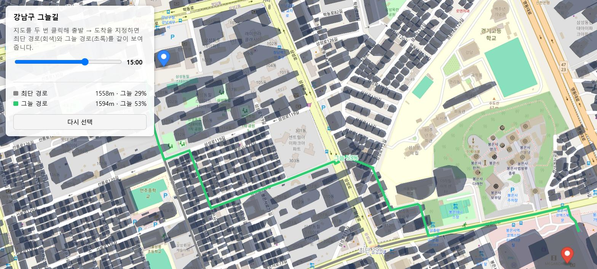
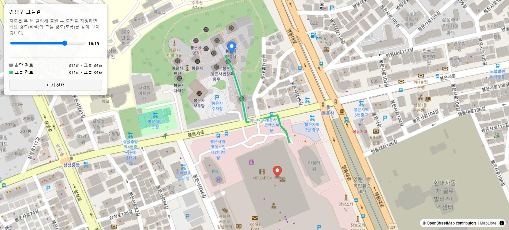

코드를 몰라도 이해할 수 있도록, 이 프로젝트가 무엇을 하고 어떻게 자라왔는지 그림으로 정리했습니다.
01 · 이 서비스는 뭔가요
여행객(특히 의료관광객)에게 병원·숙소·관광지 정보를 보여주고, AI가 짠 여행 코스를 추천하고, 햇볕을 피해 걸을 수 있는 길까지 찾아주는 서비스의 "뒷단(서버)"입니다.
02 · 전체 그림
Afterglow 서버를 가운데 두고, 왼쪽은 "정보를 가져오는 곳", 오른쪽은 "똑똑한 기능을 맡기는 곳"입니다.
화살표는 "데이터가 오가는 방향"을 뜻합니다.
03 · 만들어 온 순서
작은 병원 목록 서비스로 시작해서, 지금은 로그인·AI 추천·그늘길 지도까지 갖춘 서비스로 커졌습니다.
Notion에 적은 병원 정보를 앱에서 자동으로 볼 수 있게 함
구글 계정 로그인 추가, 기능 설명서(Swagger) 정리
병원 → 병원·숙소·관광지로 넓히고 공공 데이터로 대량 등록
AI 서버가 만든 여러 날짜짜리 코스를 저장하고 선택 결과를 기억
그림자를 계산해 시원한 길을 추천하는 지도 기능 시범 개발
강남구 시범을 서울 25개 구 전체로 확장
담당자가 데이터를 확인·수정하는 관리자 웹페이지 추가
04 · 기능별로 살펴보기
사용자가 직접 비밀번호를 만들지 않아도, 이미 있는 구글 계정으로 안전하게 들어올 수 있게 합니다.
운영자가 Notion에 직접 입력하거나, 정부의 공공 관광 데이터(TourAPI)와 엑셀(CSV) 파일을 읽어와 자동으로 등록합니다.
다른 AI 서버가 "며칠 동안 어디를 가면 좋을지" 짜주면, 그 결과를 저장해뒀다가 사용자가 하나를 고르면 기억해 둡니다.
건물이 만드는 그림자를 계산해서, 최단 거리는 아니어도 햇볕을 덜 쬐는 산책 경로를 추천합니다. (아래에서 자세히)
담당자가 브라우저에서 로그인해 등록된 장소 데이터를 출처별로 보고, 수정하거나 빠진 데이터를 채워 넣을 수 있습니다.
05 · 가장 공들인 기능
"목적지까지 가장 짧은 길"이 아니라 "가장 그늘이 많은 길"을 찾아주는 기능입니다. 아래는 실제로 만들어진 화면입니다.


복잡한 지리 계산을 다섯 단계로 나눠 미리 계산해 두고, 사용자가 요청하면 그 결과를 빠르게 꺼내 보여줍니다.
처음엔 강남구 한 곳만 계산해봤고, 잘 작동하는 걸 확인한 뒤 서울 25개 구 전체로 넓혔습니다. 규모가 얼마나 커졌는지는 아래 숫자로 확인할 수 있습니다.
06 · 어떤 도구로 만들었나
이름은 낯설어도 역할은 단순합니다 — 각각 "이 서버의 어느 부분을 담당하는지"로 이해하면 충분합니다.
| 구분 | 사용 기술 | 하는 일 |
|---|---|---|
| 서버 | Java / Spring Boot | 요청을 받고 데이터를 정리해서 응답하는 핵심 프로그램 |
| 저장소 | PostgreSQL (운영) / H2 (개발) | 병원·코스·회원 정보를 저장하는 데이터베이스 |
| 로그인 | Google OAuth2 + JWT | 구글 계정 인증, 로그인 상태를 안전하게 유지 |
| 지도 계산 | Python (OSM·GeoPandas·pvlib) | 건물·도로·태양 위치로 그늘 지도를 미리 계산 |
| 지도 화면 | MapLibre + PMTiles | 계산된 지도를 웹 브라우저에 빠르게 그려줌 |
| 배포 | GitHub Actions → EC2 | 코드가 바뀌면 자동으로 서버에 반영 |